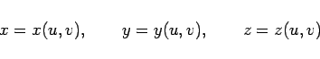
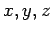
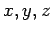

Inhalt Index DeskTop Bronstein

 Integralrechnung Oberflächenintegrale Oberflächenintegrale 2. Art Berechnung des Oberflächenintegrals 2. Art
Integralrechnung Oberflächenintegrale Oberflächenintegrale 2. Art Berechnung des Oberflächenintegrals 2. Art


Ist die Fläche S durch die Gleichungen
|  | (8.160) |
in Parameterform vorgegeben, dann berechnet man die Integrale (8.157a,b,c) nach den folgenden Formeln:
| (8.161a) |
| (8.161b) |
| (8.161c) |
Dabei sind die Ausdrücke  die Funktionaldeterminanten der Funktionenpaare aus der Menge , die von den Variablen u und v abhängen,
die Funktionaldeterminanten der Funktionenpaare aus der Menge , die von den Variablen u und v abhängen,  ist der Variabilitätsbereich von u und v des Flächenstückes
ist der Variabilitätsbereich von u und v des Flächenstückes  .
.